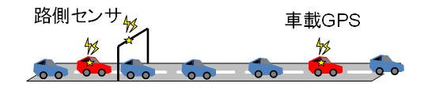
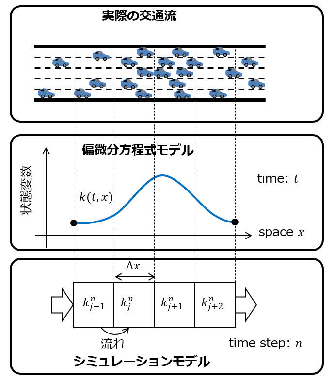
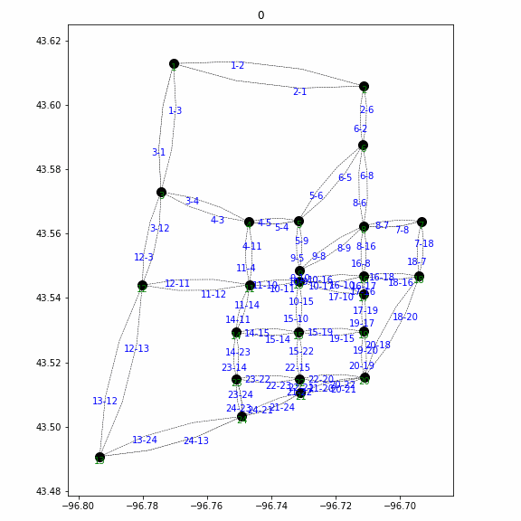
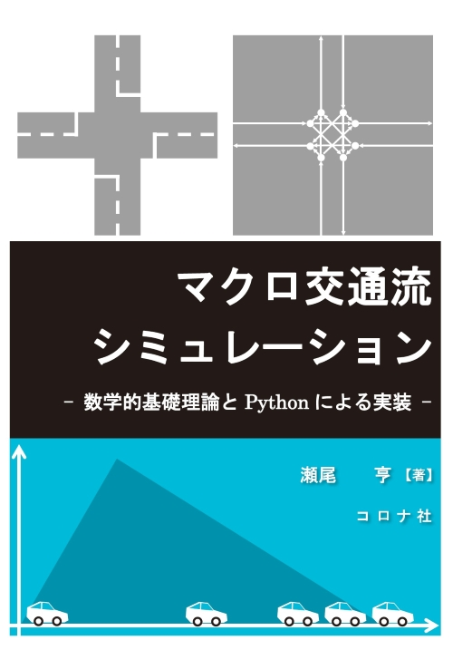
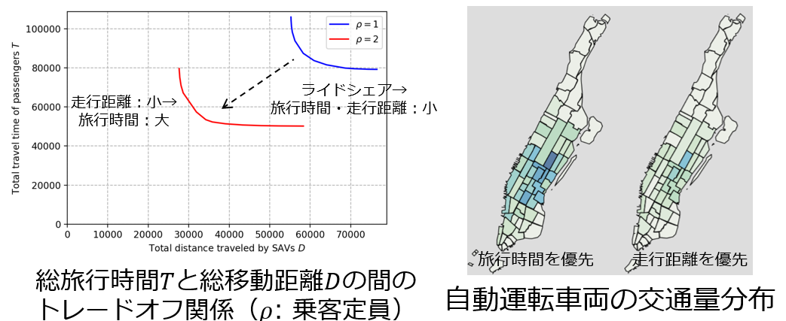
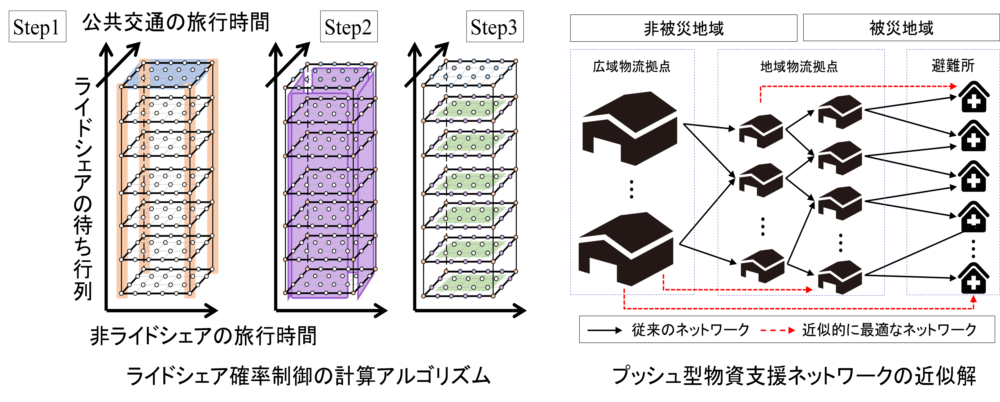

研究テーマ
私たちの生活に交通は欠かせません．通勤・通学，買物，物流，旅行，避難など，社会のあらゆる面で交通が使われています．しかし，交通は混雑や環境負荷など大きな問題を抱えており，よりよい社会の実現に向けてその解決が望まれます．
交通は物理と人間の融合したシステムです．例えば，自動車の動きは運動方程式に従います．一方，人間の思考は人間独自のものであり，（まだ）正確な再現はできません．このハイブリッドなシステムは未解明な点を多く持ち，研究として工夫しがいがある興味深い対象です．
そのような社会的重要性と興味深さに基づき，車やヒトといった交通の流れについて，理論とデータを用いて研究しています．物理的な理論は現象のメカニズムを明確に説明し，それを制御するための指針を与えてくれます．一方で，今日得られる大量のデータは，機械学習などの手段を通じて様々な知見をもたらします．理論とデータを適切に組み合わせてよりよい交通の実現に資すること，および，その過程でおもしろい研究をすることが当研究室の目的です．
詳細に興味のある方は研究室紹介スライドもご覧ください．
交通データ解析・推定・制御
広域に分散した観測データから，道路網全体の交通状態を推定し，解析・制御に応用
交通流理論・シミュレーション
自動車・歩行者・鉄道など「流れ」を数理モデルで記述．モデルを開発・計算
次世代交通システム理論
自動運転・ライドシェア・MaaSなど新しいモビリティの基礎理論・制御・都市設計
不確実な交通・物流システム
災害時ロジスティクスから日常交通まで，不確実性下での制御・最適化手法
交通状態推定・交通データ解析・交通制御
自動車交通は今日の社会で重大な役割を果たしていますが，その効率性が渋滞によって低下しているという問題があり，解決が望まれます．しかし，道路網は非常に広大であり，いつ，どこで，どの程度渋滞が起きているかは正確には誰にもわかりません．そこで，限られた観測データに基づき，道路網全体の交通状態を推定する交通状態推定の開発と検証を行っています．さらに，得られたデータや推定結果に基づき，交通の性質を分析したり，最適な制御を導出するといった応用についても研究しています．観測データとしては，スマホやカーナビのGPS情報や，ETCログ，車両感知器などを用いています．方法論としては，交通流理論，データ同化，機械学習などを用いています．

交通流理論
交通流理論とは，自動車の流れの挙動を数理的に記述するものです．道路網における交通流をシミュレートしたり，交通制御や交通状態推定のための基礎として用いられます．また，自動車の流れに限らず，歩行者や鉄道などの流れを記述するのに応用されることもあります．当研究室では，モデルの改良やシミュレーションとしての実装などを行っています．方法論としては，偏微分方程式やその数値的シミュレーションによる求解などを用いています．
簡単に使えるWebブラウザ上の交通流シミュレーションデモや，より本格的なPython製オープンソース交通流シミュレータもあるので触ってみてください．



次世代交通システム
自動運転やライドシェアといった次世代交通システムには様々な可能性があります．当研究室では，これらを用いてより良い社会を実現するための基礎理論を数理的アプローチにより研究しています．例えば，データに基づく自動運転の最適配車制御，ライドシェアのマッチング，社会にとって最も望ましい料金体系の理論的導出，AIによる制御，これらに合わせた都市交通システム設計などを扱っています．方法論としては，数理最適化，強化学習，シミュレーション，データ解析などを用いています．

不確実な交通・物流システム
交通・物流管理者は多様な不確実性に直面します．通勤などの日常交通では，時々刻々と確率的に変動する交通状態の観測を活用したリアルタイム制御が要求されます．一方で災害時は，通信インフラが損傷するため，限定的な観測を前提とした制御が必要です．当研究室では，不確実な交通・物流システムの制御手法の開発，理論解析，計算アルゴリズムの開発を行っています．方法論としては，数理最適化，最適制御，動的計画，確率計画，数値シミュレーションを用いています．

身に着けるスキルなど
所属学生には交通情報システムの知識，実社会を抽象化した数理モデルを理解（あるいは創造）する能力，それを計算する能力，データの統計分析能力，プログラミング能力，論理的な文章力等を身に着けてもらう教育方針です． 原理原則をしっかり理解し，その応用により問題を表現・解決することを重視しています．
より具体的には，主に以下のスキル・知識のうちいくつかを駆使して研究します．研究室配属時点で使える必要は全く無く，研究を通じて習得してもらいます．これらを身に着けたい方を歓迎します．
- コンピュータプログラミング（主にPython）
- コンピュータシミュレーション
- 数理最適化
- 偏微分方程式
- 確率統計
- 機械学習
- LaTeX
- LLMの活用